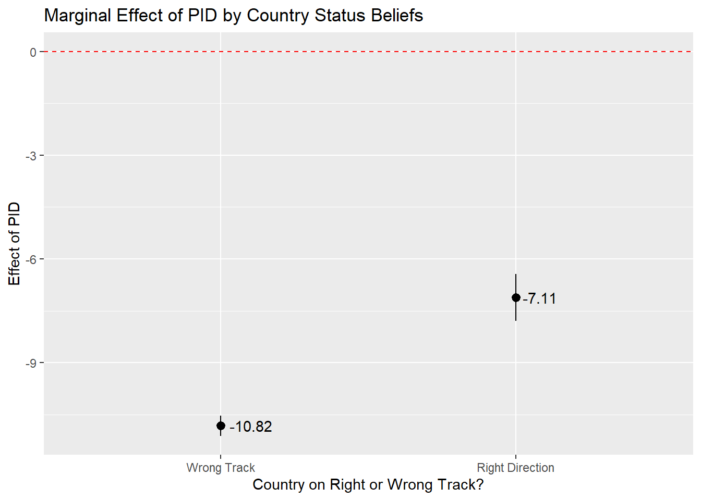
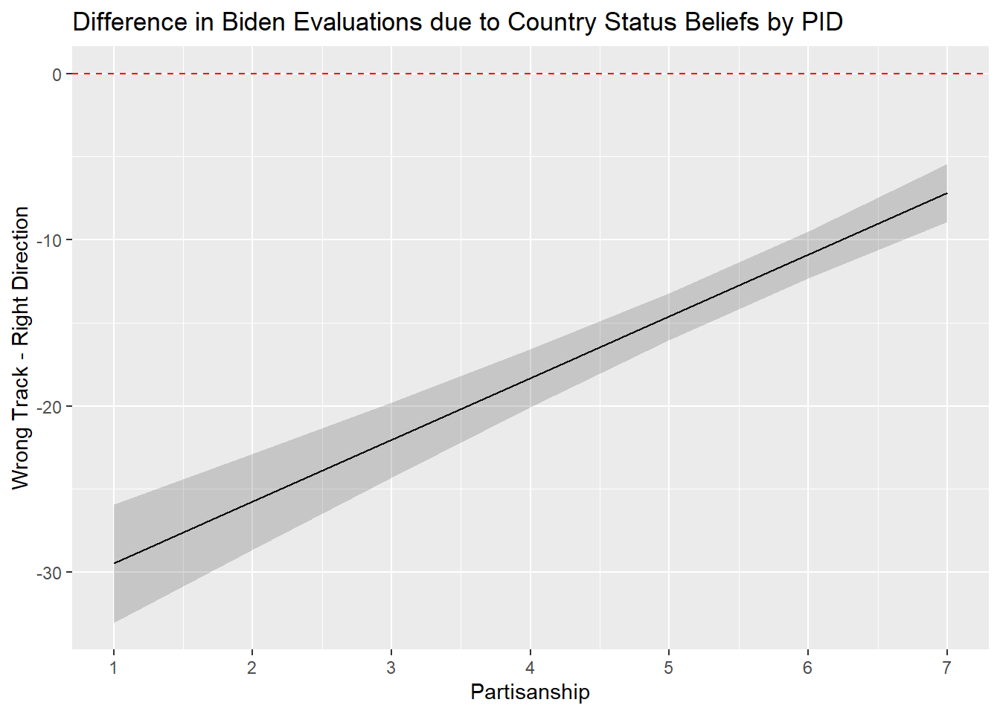

#Packages
library(rio) #Importing data
library(broom) #Model summaries
library(marginaleffects) #Marginal effects and predictions
library(tidyverse) #Data management & plotting
#Data
anes <- import("data/anes_interactions.rda")
#Example Models
biden_int <- lm(biden ~ pid * right_track + rural_urban, data = anes)
righttrack_int <- glm(right_track ~ vote2016 * age + rural_urban,
family = "binomial", data = anes)16 Marginal Effects in Interaction Models
In our last chapter we learned how to include an interaction term in our regression models to enable us to test whether the effect of one predictor variable in our model differs based on the values of a different predictor variable:

For instance, we might predict evaluations of Joe Biden based on a person’s partisanship, beliefs about the state of the US, and their interaction as in this model:
tidy(biden_int, conf.int = TRUE) # A tibble: 7 × 7
term estimate std.error statistic p.value conf.low conf.high
<chr> <dbl> <dbl> <dbl> <dbl> <dbl> <dbl>
1 (Intercept) 95.7 0.673 142. 0 94.3 97.0
2 pid -10.8 0.147 -73.7 0 -11.1 -10.5
3 right_trackRight Dir… -33.2 2.16 -15.4 1.93e-52 -37.4 -29.0
4 rural_urbanRural -4.08 0.816 -5.00 5.79e- 7 -5.68 -2.48
5 rural_urbanSmall Town -2.81 0.697 -4.03 5.60e- 5 -4.17 -1.44
6 rural_urbanCity -0.320 0.667 -0.480 6.31e- 1 -1.63 0.987
7 pid:right_trackRight… 3.71 0.373 9.96 3.20e-23 2.98 4.45 What do these coefficients tell us? The inclusion of the interaction term has subtle, but important impacts on how we interpret the coefficients for the variables in the interaction.
Interpretation
Three coefficients are reported when we interact two variables. In the example above:
pid: This tells us the expected effect of thepidvariable when theright_trackvariable takes on a value of 0.right_trackis a factor variable, so the coefficient forpidtells us the expected effect ofpidamong people who say the country is heading down the “Wrong Direction” since that is the “reference” category of the factor variableright_track. We expect to see a negative relationship betweenpidand the DV among these people.right_trackRight Direction: This tells us the expected effect of theright_trackvariable whenpidtakes on a value of 0.right_trackis a factor variable comparing those saying the country is heading in the right direction against those saying it’s heading in the wrong direction. Thus, this coefficient indicates that we expect people who said the country was heading in the right direction would evaluate Biden worse than those who said it was heading in the wrong direction among those with apidvalue of 0.1pid:right_trackRight Direction: This coefficient can be used to say how the effect of “pid” changes when “right_track” increases by 1 unit or, alternatively, how the effect of “right_track” changes when “pid” increases by 1 unit.
The foregoing may seem somewhat confusing at first glance (and perhaps second, and maybe even third!). It is for that reason that most researchers will not try to directly discuss the coefficients for the variables in the interaction when conveying the model’s results to readers. Instead, these researchers will use the model’s results to calculate other statistics that are easier to follow.
Here, we will focus on the calculation of marginal effects. By marginal effect, we mean this: how much should we expect Y to change, on average, when X changes by 1 unit? We have seen marginal effects in a few places already. In linear regression models, for instance, unstandardized regression coefficients are marginal effects even though we did not use that language. In logistic regression models, meanwhile, we saw how to translate our logistic coefficients (log of the odds scale) into average marginal effects that tell us how the probability that Y = 1 changes, on average, given a one unit change in X. In the context of a model with an interaction, we will calculate (and then plot) the marginal effect for “X” at varying levels of “Z” (e.g., the marginal effect of pid when right_track = “Wrong Track” and the marginal effect of pid when right_track = “Right Direction”) to unpack what the coefficients are telling us. We will do this using the slopes() function from the marginaleffects package.
We will show several different examples that vary according to the nature of the variables in the interaction (e.g., binary variable interacted with continuous, continuous interacted with continuous, etc.). We do not show an example with a categorical variable that has more than two levels but the same principles apply here as with any of the examples involving a binary variable.
16.1 Binary x Continuous
16.1.1 Calculation and Interpretation
We will use the biden_int model in our first example. Here, we interacted a binary variable (right_track) with a continuous variable (pid).
One question we can ask is this: is the relationship between pid (X) and Biden evaluations (Y) the same regardless of what value right_track (Z) takes on? Stated slightly differently: if we calculate the regression slope for pid for respondents who say the country is heading in the right direction and, separately, the slope for pid for respondents who say the country is heading down the wrong track, will those slopes be the same? We will use the slopes() function to calculate the effect of pid for each category of right_track to help us answer this question.
In situations where the moderator (Z) is a factor variable, such as this one, we use the following code:
slopes(biden_int,
variables = "pid",
by = "right_track")
Term Contrast right_track Estimate Std. Error z Pr(>|z|) S
pid mean(dY/dX) Wrong Track -10.82 0.147 -73.7 <0.001 Inf
pid mean(dY/dX) Right Direction -7.11 0.344 -20.7 <0.001 312.7
2.5 % 97.5 %
-11.11 -10.54
-7.78 -6.44
Columns: term, contrast, right_track, estimate, std.error, statistic, p.value, s.value, conf.low, conf.high, predicted_lo, predicted_hi, predicted
Type: response slopes(biden_int,-
The name of the command is
slopes. The first thing we put in the parentheses is the name of the model, here “biden_int”. variables = "pid"-
We next specify the name of the variable whose marginal effect we want to know. You would change
pidto the name of the variable in your example. by = "right_track"-
Specifies the moderator variable. Can only be used if the moderator is a factor variable.
The slope of the regression line for pid when right_track = ‘Right Direction’” is -7.11. The slope when right_track = ‘Wrong Track’ is -10.82. We can thus say that the relationship between partisan identity and Biden evaluations is stronger (more negative) among respondents who think the country is on the wrong track than among those that thought things were heading in the right direction. We can turn to the coefficient for the interaction term to say whether the difference between these two marginal effects is statistically significant. The interaction term is statistically significant (p < 0.001), which means we can reject the null hypothesis that the difference between the two marginal effects/slopes is actually 0.
A couple of further points here. First, notice that the marginal effect estimate when right_track = “Wrong Track’ is the same value as the coefficient for pid in our model. Second, notice that the difference between the two marginal effects estimates = the value of the interaction term coefficient.
#Our Results Again
tidy(biden_int) |> select(term, estimate, p.value)# A tibble: 7 × 3
term estimate p.value
<chr> <dbl> <dbl>
1 (Intercept) 95.7 0
2 pid -10.8 0
3 right_trackRight Direction -33.2 1.93e-52
4 rural_urbanRural -4.08 5.79e- 7
5 rural_urbanSmall Town -2.81 5.60e- 5
6 rural_urbanCity -0.320 6.31e- 1
7 pid:right_trackRight Direction 3.71 3.20e-23#Marginal Effect (Right Direction) - Marginal Effect (Wrong Track) = Interaction Term Coefficient
-7.11 - (-10.82)[1] 3.71We can also investigate the effect of the factor variable right_track on the dependent variable when partisan identity takes on different values. In this case, we are using the continuous variable as the moderator variable (Z). We chose to calculate the marginal effects for all possible values of pid given that there are only 7.
slopes(biden_int,
variables = "right_track",
newdata = datagrid(pid = c(1,2,3,4,5,6,7)))
Term Contrast pid Estimate Std. Error z
right_track Right Direction - Wrong Track 1 -29.47 1.811 -16.28
right_track Right Direction - Wrong Track 2 -25.76 1.473 -17.48
right_track Right Direction - Wrong Track 3 -22.05 1.158 -19.04
right_track Right Direction - Wrong Track 4 -18.33 0.888 -20.64
right_track Right Direction - Wrong Track 5 -14.62 0.718 -20.37
right_track Right Direction - Wrong Track 6 -10.90 0.721 -15.13
right_track Right Direction - Wrong Track 7 -7.19 0.895 -8.03
Pr(>|z|) S 2.5 % 97.5 %
<0.001 195.4 -33.02 -25.92
<0.001 224.9 -28.65 -22.87
<0.001 266.0 -24.32 -19.78
<0.001 311.9 -20.07 -16.59
<0.001 303.9 -16.02 -13.21
<0.001 169.4 -12.31 -9.49
<0.001 49.9 -8.94 -5.43
Columns: rowid, term, contrast, estimate, std.error, statistic, p.value, s.value, conf.low, conf.high, pid, predicted_lo, predicted_hi, predicted, right_track, rural_urban, biden
Type: response newdata = datagrid(pid = c(1,2,3,4,5,6,7)))-
We specify the values of the moderator. These values should be changed for you own analysis purposes. We use
newdata = datagrid()becausepidis being treated as continuous.
The output above shows that the difference in Biden approval scores between those saying the country is heading in the “right direction” vs. those who say it is on the “wrong track” is approximately -29.47 points among Strong Democrats (pid=1), -25.76 points among Not Strong Democrats (pid = 2), and -7.19 points among Strong Republicans (pid=7). The effect of the right_track variable decreases by 3.71 scale points with each increase of PID. This value of 3.71 is the same as our interaction term coefficient!
#Our Results Again; only showing term and estimate to keep things simple
tidy(biden_int) |> select(term, estimate, p.value)# A tibble: 7 × 3
term estimate p.value
<chr> <dbl> <dbl>
1 (Intercept) 95.7 0
2 pid -10.8 0
3 right_trackRight Direction -33.2 1.93e-52
4 rural_urbanRural -4.08 5.79e- 7
5 rural_urbanSmall Town -2.81 5.60e- 5
6 rural_urbanCity -0.320 6.31e- 1
7 pid:right_trackRight Direction 3.71 3.20e-23#Marginal Effect (PID = 2) - Marginal Effect (PID = 1) = Interaction Term Coefficient
-25.76 - (-29.47)[1] 3.71#Marginal Effect (PID = 7) - Marginal Effect (PID = 6) = Interaction Term Coefficient
-7.19 - (-10.90)[1] 3.71The statistically significant interaction term indicates that we can reject the null hypothesis that the change in the effect of right_track given a one unit change in pid is actually 0.
16.1.2 Plotting
Marginal effects are often communicated via plots. The y-axis in these plots is the estimated marginal effect while the x-axis is the value of the moderator.
Below is the example when the factor variable is the moderator. The ggplot code has been seen in previous classes. We use the geom_pointrange statement when our moderator is a factor (here: right_track).
slopes(biden_int,
variables = "pid",
by = "right_track") |>
ggplot(aes(x = right_track, y = estimate)) +
geom_pointrange(aes(ymin = conf.low, ymax = conf.high)) +
labs(title = "Marginal Effect of PID by Country Status Beliefs",
y = "Effect of PID",
x = "Country on Right or Wrong Track?") +
geom_hline(yintercept = 0, linetype = "dashed", color = "red") +
geom_text(aes(label = round(estimate, 2)), hjust = -0.2) - 1
-
In this example we directly pass the results from
slopes()toggplot()using the pipe operator. We could, of course, first save the results of theslopes()command to an object and then use that in theggplot()command. If you try to use this syntax as a jumping off point and run into issues, then we’d recommend splitting things up to help you troubleshoot.

And here is the example when the continuous variable is the moderator. Now we use geom_line() in combination with geom_ribbon because our moderator is a continuous variable:
#Effect of right_track by pid
slopes(biden_int,
variables = "right_track",
newdata = datagrid(pid = c(1,2,3,4,5,6,7))) |>
ggplot(aes(x=pid, y=estimate)) +
geom_line() +
geom_ribbon(aes(ymin=conf.low, ymax=conf.high), alpha = 0.2) +
labs(title = "Difference in Biden Evaluations due to Country Status Beliefs by PID" ,
y = "Wrong Track - Right Direction",
x = "Partisanship") +
geom_hline(yintercept = 0, linetype = "dashed", color = "red") +
scale_x_continuous(breaks=c(1,2,3,4,5,6,7))- 1
-
If we did not have this line, then
ggplot()could have only shown ticks at 2, 4, and 6. The default behavior ofggplot()is often good enough, but providing all the values is a bit more informative in this instance given that the moderator can only take on 7 different values.

16.2 Continuous by Continuous Interaction
The code for marginal effects calculation follows the same principles in case of an interaction between 2 continuous variables. For example, here we predict Biden evaluations based on the following variables: age, socialists (a respondent’s evaluation of socialists on a 0 (“very cold or unfavorable”) to 100 (“very warm or favorable” scale), the interaction between age and socialists, and rural_urban as a control variable.
#Run the model and store results
biden_int2 <- lm(biden ~ socialists * age + rural_urban, data = anes)
#Summary of results
tidy(biden_int2)# A tibble: 7 × 5
term estimate std.error statistic p.value
<chr> <dbl> <dbl> <dbl> <dbl>
1 (Intercept) 30.0 2.00 15.0 4.68e-50
2 socialists 0.197 0.0381 5.17 2.46e- 7
3 age -0.0752 0.0345 -2.18 2.95e- 2
4 rural_urbanRural -10.9 1.08 -10.1 9.02e-24
5 rural_urbanSmall Town -7.04 0.924 -7.62 3.00e-14
6 rural_urbanCity 0.455 0.883 0.516 6.06e- 1
7 socialists:age 0.00980 0.000699 14.0 6.21e-44The interaction term is statistically significant. We can investigate this significant interaction in two ways. We could calculate the effect (regression slope) of age at different values of the socialists predictor. Or, we can calculate the effect of evaluations of socialists on Biden evaluations at different age values. In both cases, we must specify the values for our moderator variable. We choose logical values in line with the nature of our data.
#Marginal effect of age at socialists = 0, 10, 20...100
slopes(biden_int2,
variables = "age",
newdata = datagrid(socialists = seq(from = 0, to = 100, by = 10)))
#Marginal effect of socialists at age = 20,30,40...80
slopes(biden_int2,
variables = "socialists",
newdata = datagrid(age = seq(from = 20, to = 80, by = 10)))- 1
- Our age variable ranges from 18 to 80 (all respondents who are 80 years old or older are given a score of 80).
Term socialists Estimate Std. Error z Pr(>|z|) S 2.5 % 97.5 %
age 0 -0.0752 0.0345 -2.18 0.0295 5.1 -0.1429 -0.00751
age 10 0.0228 0.0292 0.78 0.4355 1.2 -0.0344 0.07997
age 20 0.1207 0.0247 4.90 <0.001 20.0 0.0724 0.16906
age 30 0.2187 0.0215 10.17 <0.001 78.3 0.1766 0.26084
age 40 0.3167 0.0204 15.56 <0.001 178.9 0.2768 0.35656
age 50 0.4146 0.0215 19.24 <0.001 271.7 0.3724 0.45687
age 60 0.5126 0.0247 20.72 <0.001 314.4 0.4641 0.56110
age 70 0.6106 0.0293 20.84 <0.001 318.0 0.5532 0.66799
age 80 0.7085 0.0346 20.45 <0.001 306.5 0.6407 0.77644
age 90 0.8065 0.0405 19.93 <0.001 291.2 0.7272 0.88582
age 100 0.9045 0.0467 19.38 <0.001 275.5 0.8130 0.99596
Columns: rowid, term, estimate, std.error, statistic, p.value, s.value, conf.low, conf.high, socialists, predicted_lo, predicted_hi, predicted, age, rural_urban, biden
Type: response
Term age Estimate Std. Error z Pr(>|z|) S 2.5 % 97.5 %
socialists 20 0.393 0.0253 15.5 <0.001 178.7 0.343 0.442
socialists 30 0.491 0.0194 25.2 <0.001 464.6 0.453 0.529
socialists 40 0.589 0.0147 40.1 <0.001 Inf 0.560 0.618
socialists 50 0.687 0.0123 55.9 <0.001 Inf 0.663 0.711
socialists 60 0.785 0.0136 57.8 <0.001 Inf 0.758 0.811
socialists 70 0.883 0.0178 49.7 <0.001 Inf 0.848 0.917
socialists 80 0.981 0.0233 42.0 <0.001 Inf 0.935 1.026
Columns: rowid, term, estimate, std.error, statistic, p.value, s.value, conf.low, conf.high, age, predicted_lo, predicted_hi, predicted, socialists, rural_urban, biden
Type: response Here, we can see that the effect of age is estimated as negative and statistically significant when the socialists variable = 0 (-0.0752 [95% CI: -0.143, -0.008]). Note how this estimate is identical to the coefficient for age in the model summary. As the socialists variable increases, however, the effect of age flips signs and becomes increasingly positive in value. This is consistent with the positively signed coefficient on the interaction term. Meanwhile, the effect of the socialists variable is positive among young people (e.g., among those aged 20 it is 0.39 [0.34, 0.44]) with this effect growing even more positive as age increases.2
For plotting, we use the code for when the moderator variable is continuous (see above, Section 16.1.2).
16.3 Binary x Binary Interaction
When our interaction is made up of 2 binary factor variables, the same principles for the R code continue to apply. Here we predict the score for Biden based on the interaction between right_track and vote2016 (with rural_urban as a control variable).
#Run the model and store results
biden_int3 <- lm(biden ~ right_track * vote2016 + rural_urban, data = anes)
#Summary of results
tidy(biden_int3)# A tibble: 7 × 5
term estimate std.error statistic p.value
<chr> <dbl> <dbl> <dbl> <dbl>
1 (Intercept) 78.4 0.581 135. 0
2 right_trackRight Direction -25.2 2.11 -12.0 1.20e-32
3 vote2016Trump Vote -51.6 0.770 -67.0 0
4 rural_urbanRural -2.77 0.907 -3.05 2.30e- 3
5 rural_urbanSmall Town -1.67 0.785 -2.13 3.34e- 2
6 rural_urbanCity 0.452 0.753 0.601 5.48e- 1
7 right_trackRight Direction:vote2016Trum… 13.8 2.28 6.04 1.61e- 9The marginal effects can be found as follows:
#right_track as moderator
slopes(biden_int3,
variables = "vote2016",
by = "right_track")
Term Contrast right_track Estimate
vote2016 mean(Trump Vote) - mean(Clinton Vote) Wrong Track -51.6
vote2016 mean(Trump Vote) - mean(Clinton Vote) Right Direction -37.8
Std. Error z Pr(>|z|) S 2.5 % 97.5 %
0.77 -67.0 <0.001 Inf -53.1 -50.1
2.15 -17.6 <0.001 227.0 -42.1 -33.6
Columns: term, contrast, right_track, estimate, std.error, statistic, p.value, s.value, conf.low, conf.high, predicted_lo, predicted_hi, predicted
Type: response #vote2016 as moderator
slopes(biden_int3,
variables = "right_track",
by = "vote2016")
Term Contrast vote2016 Estimate
right_track mean(Right Direction) - mean(Wrong Track) Clinton Vote -25.2
right_track mean(Right Direction) - mean(Wrong Track) Trump Vote -11.5
Std. Error z Pr(>|z|) S 2.5 % 97.5 %
2.107 -12.0 <0.001 107.5 -29.4 -21.12
0.866 -13.2 <0.001 130.7 -13.2 -9.78
Columns: term, contrast, vote2016, estimate, std.error, statistic, p.value, s.value, conf.low, conf.high, predicted_lo, predicted_hi, predicted
Type: response The top results show that 2016 Trump voters evaluated Biden worse than 2016 Clinton voters regardless of their beliefs about the (actually sorry) state of the country in 2020. However, the difference is much larger among those that thought things in the country were heading in the wrong direction (difference = -51.6) than those that thought otherwise (-37.80). You might notice, again, that the interaction term coefficient equals the difference between these two estimates (e.g., -37.8 - (-51.6) = 13.8). The statistically significant interaction term indicates we can reject the null hypothesis that the difference between the two marginal effects estimates = 0.
For plotting, we use the code for when the moderator variable is a factor variable (see Section 16.1.2).
16.4 Logistic regression example
Our R code remains similar when we have an interaction in a logistic regression as well. The marginal effects obtained now with the slopes() command are the changes in predicted probability that Y = 1 (see Chapter 10).
Here are the results of the interaction model again:
#Our model
tidy(righttrack_int)# A tibble: 7 × 5
term estimate std.error statistic p.value
<chr> <dbl> <dbl> <dbl> <dbl>
1 (Intercept) -2.95 0.345 -8.56 1.08e-17
2 vote2016Trump Vote 2.82 0.373 7.55 4.22e-14
3 age -0.00946 0.00630 -1.50 1.33e- 1
4 rural_urbanRural 0.208 0.111 1.87 6.15e- 2
5 rural_urbanSmall Town 0.111 0.101 1.10 2.73e- 1
6 rural_urbanCity 0.160 0.111 1.45 1.47e- 1
7 vote2016Trump Vote:age 0.0129 0.00682 1.89 5.84e- 2The interaction in this model is between age (a continuous variable) and vote2016 (a factorized binary variable). We can calculate the marginal effects as follows:
# age as moderator at = 20, 30...80
slopes(righttrack_int,
variables = "vote2016",
newdata = datagrid(age = seq(from = 20, to = 80, by = 10)))
Term Contrast age Estimate Std. Error z Pr(>|z|) S
vote2016 Trump Vote - Clinton Vote 20 0.443 0.0300 14.8 <0.001 161.9
vote2016 Trump Vote - Clinton Vote 30 0.455 0.0244 18.7 <0.001 255.6
vote2016 Trump Vote - Clinton Vote 40 0.467 0.0199 23.4 <0.001 400.7
vote2016 Trump Vote - Clinton Vote 50 0.479 0.0173 27.7 <0.001 558.2
vote2016 Trump Vote - Clinton Vote 60 0.490 0.0172 28.6 <0.001 593.7
vote2016 Trump Vote - Clinton Vote 70 0.501 0.0195 25.7 <0.001 481.7
vote2016 Trump Vote - Clinton Vote 80 0.512 0.0235 21.8 <0.001 347.1
2.5 % 97.5 %
0.384 0.502
0.407 0.503
0.428 0.506
0.445 0.513
0.456 0.524
0.463 0.539
0.466 0.558
Columns: rowid, term, contrast, estimate, std.error, statistic, p.value, s.value, conf.low, conf.high, age, predicted_lo, predicted_hi, predicted, vote2016, rural_urban, right_track
Type: response # vote2016 as moderator
slopes(righttrack_int,
variables = "age",
by = "vote2016")
Term Contrast vote2016 Estimate Std. Error z Pr(>|z|) S
age mean(dY/dX) Clinton Vote -0.000312 0.000209 -1.49 0.136 2.9
age mean(dY/dX) Trump Vote 0.000854 0.000650 1.31 0.189 2.4
2.5 % 97.5 %
-0.000723 9.84e-05
-0.000421 2.13e-03
Columns: term, contrast, vote2016, estimate, std.error, statistic, p.value, s.value, conf.low, conf.high, predicted_lo, predicted_hi, predicted
Type: response We expect that people who voted for Trump in 2016 to be more likely to say that the country is heading in the right direction than those that voted for Clinton in 2016 even among the very young with this difference expected to grow with age. For instance, we expect the probability of saying the country is heading in the right direction to be about 45.5 percentage points higher among 30 year old respondents who voted for Trump in 2016 than among 30 year old respondents who voted for Clinton in 2016. The corresponding difference among those 80 years (or older) is 51.2 percentage points.3
See prior sections for plotting.
Our
pidvariable ranges from 1-7 so there is no “whenpid= 0” group in our data. This is an expectation or extrapolation from our data. It is not a very interesting or informative one, but that is not a problem so long as we use the tools shown in the rest of this chapter, and the next one, to properly interpret our model.↩︎The examples here calculate the marginal effects in jumps of 10 units of the moderator (age = 20, 30, 40…). If we had chosen 1 unit increments of the moderator (e.g., age = 20, 21, 22 …) then we would once again see that the difference in effects = the interaction term coefficient. The marginal effect of the
socialistsvariable when age = 20 is 0.393 while it is 0.403 when age = 21. 0.403 - 0.393 = 0.01 which is right in line with the interaction term due to using the rounded estimates displayed in our output.↩︎We have an estimate here comparing people 20 years old in 2020 who either voted for Trump or Clinton in 2016. 20 year old respondents in 2020 would have been 16 in the year 2016 and hence ineligible to vote in that election given that one must be at least 18 years old to vote in US elections. This is not evidence of voter fraud, but rather a reminder that we can use statistical models to produce all sorts of estimates, even those that aren’t exactly meaningful, and we should always think hard about what we’re trying to do when fitting a model.↩︎